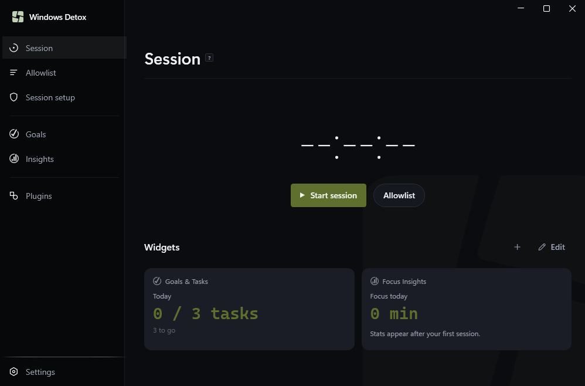
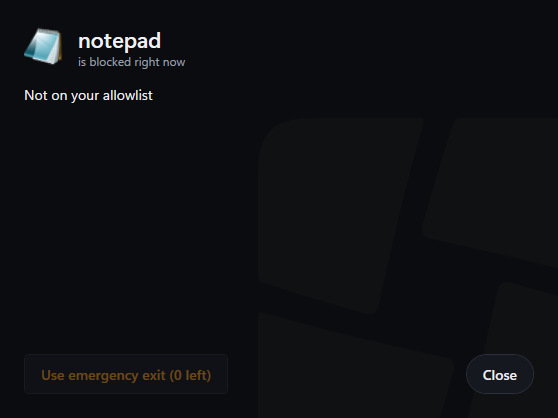
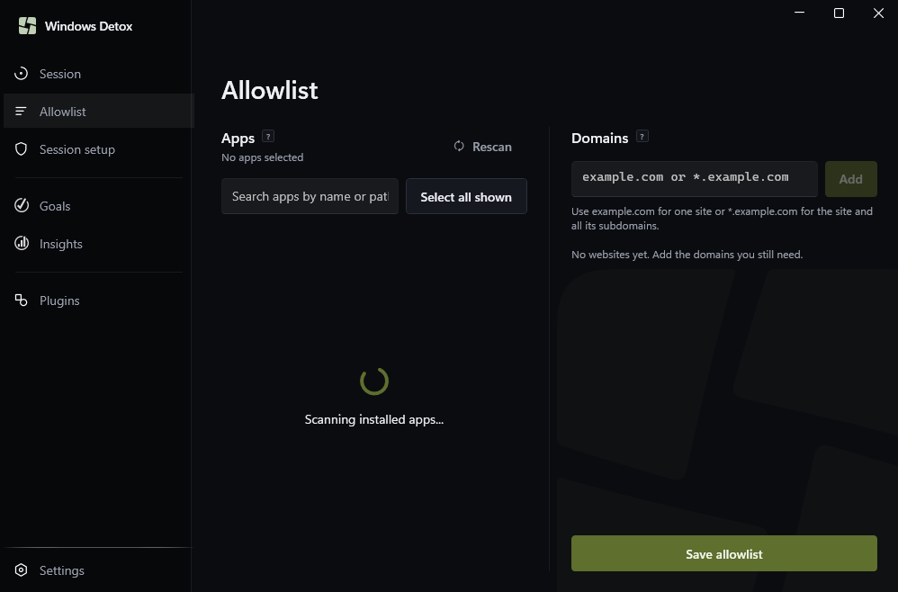
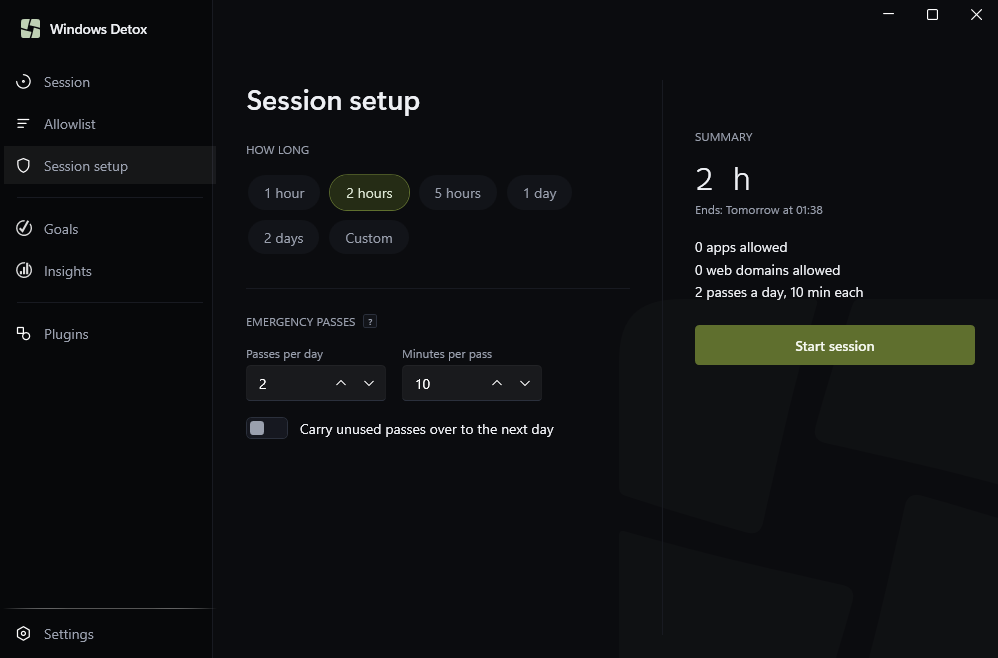
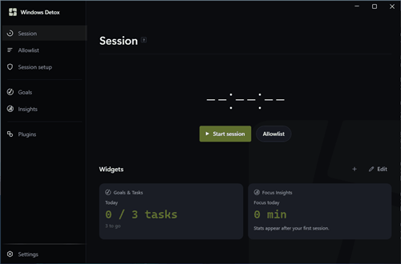
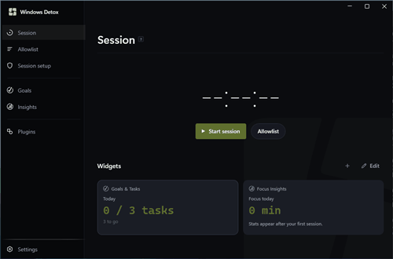
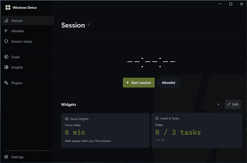
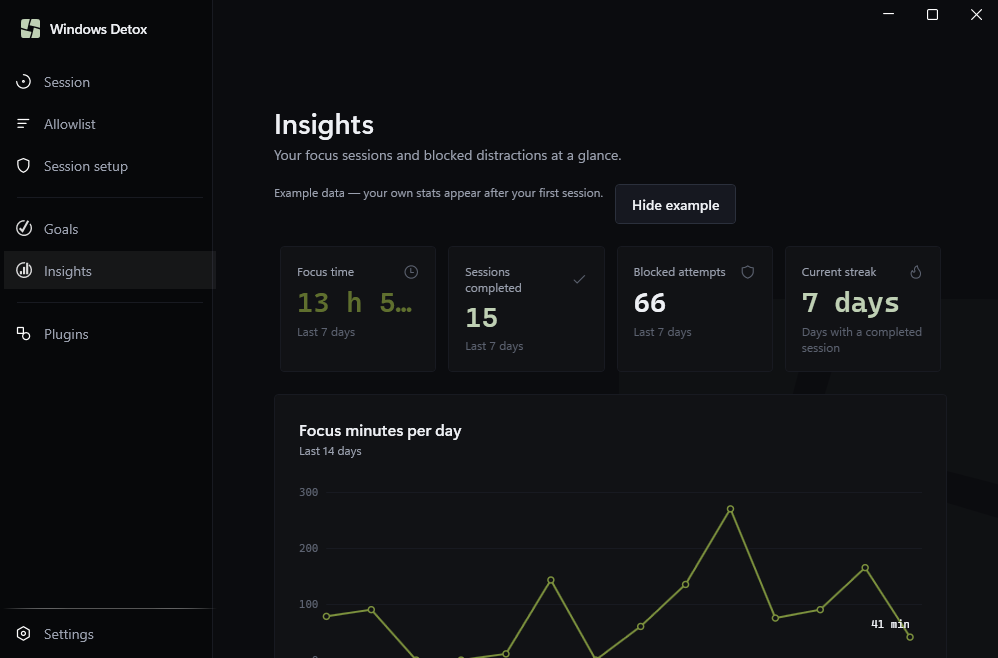
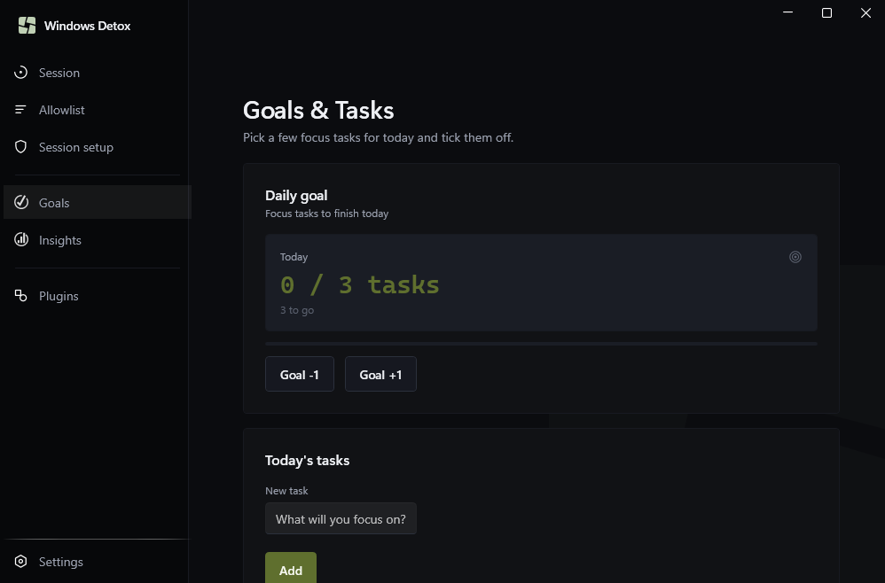

Sessions that can't be cut short
The clock runs in a Windows service, not in the window you can close. It counts elapsed time itself and anchors it to network time, so setting the Windows clock back doesn't help.
A distraction blocker for Windows 10 and 11
Pick the apps and websites you still need, then start a session. Everything else stays blocked until the timer ends.
No release yet. Download the WindowsDetox-Setup artifact from the latest successful build (GitHub sign-in required).


You make the choices up front, while you're calm. The session keeps them when you're not.


Windows Detox is aimed at the impulse to bypass it. Each of these exists to make that impulse take longer than it lasts.
The clock runs in a Windows service, not in the window you can close. It counts elapsed time itself and anchors it to network time, so setting the Windows clock back doesn't help.
Apps off your allowlist are closed and replaced with a block screen. Edge, Chrome and Firefox are routed through a local filter, with DNS over HTTPS and QUIC switched off so sites can't slip around it.
Set passes per day and minutes per pass, and choose whether unused ones carry over. A warning arrives 60 seconds before a pass ends.
Each session generates a one-time recovery code and shows it once. Only a salted hash is stored. Entering it ends the session and rolls everything back.
Every change is journaled before it's applied, then undone in reverse when the session ends, at boot after expiry, or on uninstall. Your hosts file is never edited.
Two services supervise each other and restart within a second if one is stopped. Task Manager, Registry Editor and Command Prompt are blocked during a session.
Plugins are compiled and run in a separate low-privilege process. They can add pages, widgets and settings, or add blocking. They can't allow anything you've blocked, and a plugin that fails counts as no opinion.
Widgets sit under the timer. Add the ones you want, arrange them, and tap one to open the page behind it.



The core app keeps no statistics, on purpose. Focus Insights and Goals & Tasks ship with the installer as ordinary plugins, so you can switch them off, or write your own.

Records your sessions and blocked attempts, then shows focus time, streaks, the apps you reach for most, and when distractions happen.

Pick a few focus tasks for the day before you start a session. Tick them off from the dashboard widget and watch a 7-day history build.
The Plugins page hands you a starter template: a working plugin, its tests, and written rules for the plugin SDK. If you use an AI coding agent, point it at AGENT_INSTRUCTIONS.md. The template also carries plugin-authoring skills in .claude/skills.
A plugin that fails any step isn't installed. Plugins can't be installed or removed during a session.
{
"id": "com.windowsdetox.insights",
"name": "Focus Insights",
"version": "1.0.0",
"sdkVersion": "1.0",
"entryType": "FocusInsights.InsightsPlugin",
"capabilities": [
"events.session",
"events.process",
"ui.page",
"ui.dashboard",
"ui.settings"
]
}An app that locks your own PC has to be easy to get out of when something is wrong with the app. Here is how it undoes itself, and what it can't do.
A rollback journal records the original state first, then the change. If the service is damaged, a sweep removes everything the app created, because each artifact carries an ownership marker. If the service stops, the network filters disappear with it and browsing returns to normal.
The VM guide sets up a disposable Windows machine with a snapshot, an administrator account and a standard account, and lists every way out, from a developer abort to reverting the snapshot.
Safe Mode, boot media, or taking ownership of files will get around any blocker that has no signed kernel driver. Windows Detox stops impulsive bypass, not a determined administrator. Use a standard account day to day and keep the admin one for installing and recovery.
Windows SmartScreen may warn you. Choose More info, then Run anyway. The installer asks for administrator rights, because it registers two services.
Not from the app: there's no cancel button and the timer can't be shortened. Two things end it early. Emergency passes pause blocking for a few minutes without ending anything. The break-glass code, shown once when the session starts, ends the session with a full rollback. Write it down.
Edge, Chrome and Firefox. The app sets browser policies that send traffic through a local filter, turns off DNS over HTTPS and QUIC, and blocks direct browser connections while a session runs. The policies are removed when it ends.
Two services watch each other, and each restarts the other within a second. If the main service goes away entirely, the network filters it created disappear with it and browsing falls back to normal.
The core app keeps no usage statistics. The Focus Insights plugin records sessions and blocked attempts, but only on your device, and you can turn off recording of app names or clear everything. The bundled plugins have no network access. The app does check the time online so a session can't be shortened by changing the clock.
Uninstall from Settings, Apps, Installed apps, or run Blocker.Setup.exe --uninstall from the install folder. Uninstalling undoes every change the app made. It's refused while a session is running, so deleting files can never shorten one.
It's young software and has no GitHub Release yet. Try it in a virtual machine first, keep your break-glass code, and start with a short session and a small allowlist.
Windows 10 and 11. One installer, two services, and a way out if you need it.
There's no release yet. Download the WindowsDetox-Setup artifact from the latest successful build (GitHub sign-in required), or build it yourself.